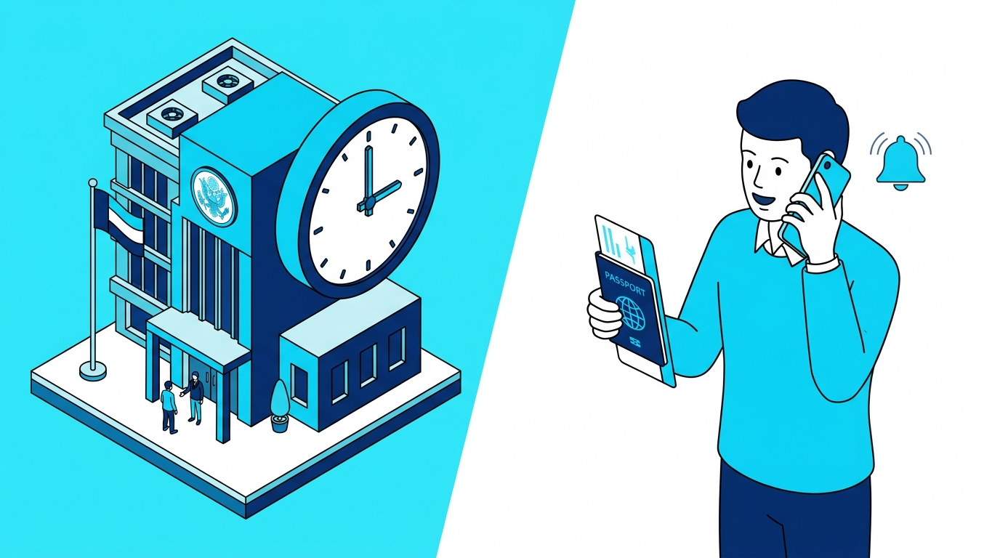
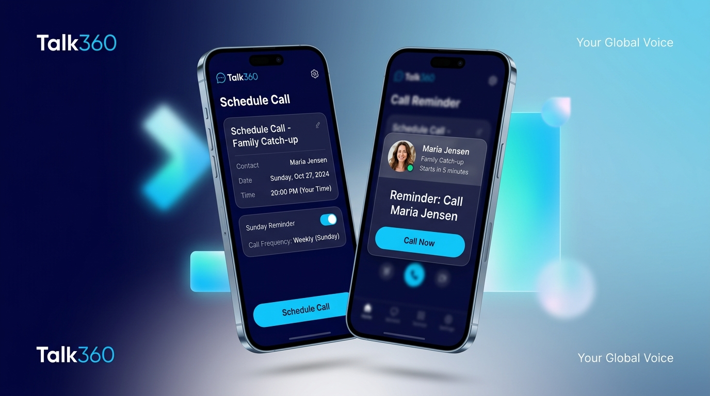

Talk360 Scheduled Calls
Turning ad-hoc international calling into predictable, recurring habits — tailored to how each user already told us they call: Family, Business, or Embassies.
3
Segments Personalized
Zero
New Backend Services
POC
Already Running on Android
The "Dormancy Leak": Why Cross-Border Callers Go Quiet
International calling carries real mental overhead. Users know who they need to call, but timezone friction and irregular schedules turn postponed calls into forgotten ones — and forgotten calls into dormant balances.
The Mental Math Tax
"Is it 8 PM in Lagos or 9 PM?" Callers delay because they don't want to catch loved ones asleep or clients outside work hours. A delayed call is usually a call that never happens.
The Punctuality Crisis
Embassies, consulates, and government desks often operate a two- to three-hour morning window. Miss it, and a visa or legal process slips by a week.
From Reactive to Recurring
Ad-hoc calling means ad-hoc top-ups. A recurring weekly slot — Sunday family dinner, Monday team sync — turns Talk360 into a standing calendar entry instead of an app people remember only sometimes.
Tailored Value Propositions for Every User Persona
The HomeScreen card personalizes its copy based on the user segment supplied by the backend profile
(captured during Onboarding: calling_home, calling_for_work, calling_when_it_counts),
with a seamless default fallback for legacy users.
"Never Miss Family Moments"
Expats and diaspora calling parents, children, and spouses abroad. Sunday evening dinners, birthdays, and weekly check-ins.
"Punctual Cross-Border Syncs"
Founders, traders, consultants, and remote professionals needing a reliable, scheduled dial-in with international clients and suppliers.

"Beat the Morning Queue"
Immigrants, students, and travelers calling consulates, passport bureaus, airlines, and embassies with strict morning call windows.
HomeScreen Card Mockup
The same card component renders differently per segment, and switches entirely once a call is scheduled. Try the tabs below.
Stay connected with family
Set recurring reminders for Sunday dinners and catch-ups across timezones.
Native Android Compose Design
Built on Talk360's existing design tokens (SpaceBlue80, Talk360Blue50, Sapphire) so the card reads as part of the app, not a bolted-on feature.

🎯 1-Tap Execution
An upcoming reminder surfaces a direct "Call Now" action that dials straight in, bypassing extra navigation.
🔄 Flexible Recurrence Engine
Supports Once (e.g. an embassy appointment), Daily (a morning check-in), or Custom Days (every Saturday & Sunday).
🔋 On-Device Exact Alarms
Uses Android AlarmManager.setExactAndAllowWhileIdle, re-armed on boot, so reminders fire
through Doze mode without a background service.
The Hypothesis We Want to Test
We don't have production numbers yet — that's exactly what the A/B rollout proposed on the next slide is for. Here is the mechanism we're betting on, and how each part gets measured.
Higher Engagement & Call Volume
Recurring reminders turn sporadic calls into habitual weekly rituals (e.g. Sunday family syncs), driving higher total calls and talk-time minutes.
Shorter Call Gaps (Intent to Action)
Compresses the friction gap between deciding to call and placing the call, preventing ad-hoc delays from turning into account dormancy.
Higher-Intent Notifications
Reminders tied to a call the user scheduled themselves out-convert generic marketing pushes, driving direct action with zero user annoyance.
On-Time Dialing, Narrow Windows
Exact-alarm precision ensures callers connect the minute restricted operational windows open (e.g. embassies and visa queues).
| Hypothesis | How We'll Measure It | Segment Most Affected |
|---|---|---|
| Higher engagement & call volume | Total calls placed & talk-time minutes per active user/month (scheduled vs. control cohort) | All segments |
| Shorter call gaps (intent to action) | Median days-between-calls and D30/D60 active retention for scheduled users vs. control | Family & Business |
| Higher-intent notifications | Notification open rate & direct dial CTR on scheduled_call_reminder_tapped vs. promo pushes |
All segments |
| On-time dialing (narrow windows) | Time elapsed between reminder alarm fire and scheduled_call_called_now |
Embassies & Critical |
POC Learnings: Local-First Engine, Zero New Backend Services
The scheduling engine, alarms, and persistence run 100% locally on-device. The only backend touchpoint is consuming the existing user segment from the profile — with a built-in client fallback so backend timing never blocks rollout.
Local-First Persistence
Implemented in shared/src/commonMain/sqldelight/ (3.sqm). All schedule data stays on-device. Zero scheduling microservices, server cron jobs, or database migrations needed.
user_segment from profile payload. If null or pending, defaults seamlessly to a general prompt.
AlarmManager & Boot Persistence
Uses ExactAlarmPermissionManager with receivers. Alarms re-arm on reboot and fire through Doze mode completely on-device. Zero push-server traffic or cloud cron overhead.
Standard Talk360 Architecture
ScheduledCallCard.kt plugs straight into HomeScreen.kt's LazyColumn alongside existing cards using standard MVI and Koin DI.
Product Roadmap & Phased Rollout
A staged rollout to validate the hypotheses before committing further platform investment.
HomeScreen Card & Core Engine
- Personalized HomeScreen discovery card mapped to the Onboarding segment.
- Active upcoming call cockpit with 1-tap dial.
- Create/Edit flow with recurrence (Once, Daily, Custom days).
- On-device alarm notifications with a "Call Now" action.
iOS Release & Calendar Bridges
- Port the UI to Talk360 iOS using the existing KMP shared domain models.
- "Add to Google / Apple Calendar" on save.
- Pre-call balance warning ("You have 8 minutes left — top up before your call").
- Timezone visualizer in the contact picker.
Intelligent Scheduling
- Heuristic prompt: "You usually call David on Saturdays at 6 PM. Schedule a reminder?"
- Embassy directory integration with automatic opening-hour presets.
- Shared scheduling links via WhatsApp for loved ones.
Recommendation for Product Department
The POC has validated technical feasibility and the segment-aware UX. We recommend proceeding with an A/B rollout in release TBD to test the hypotheses from the previous slide.
Launch a 20% A/B Test
Test Variant A (HomeScreen Scheduled Call card with segment-aware copy) against Control (standard HomeScreen) on 20% of active users.
Finalize Multilingual Copy
Strings are already structured in strings.xml; review translations in Dutch, Spanish, French,
and German ahead of rollout.
Event Tracking Integration
Instrument scheduled_call_created, scheduled_call_reminder_tapped, and
scheduled_call_called_now, each tagged with segment, before rollout begins.